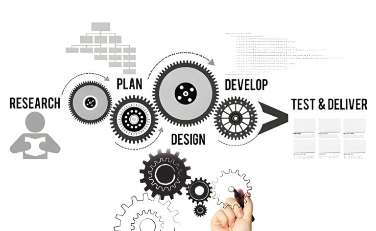
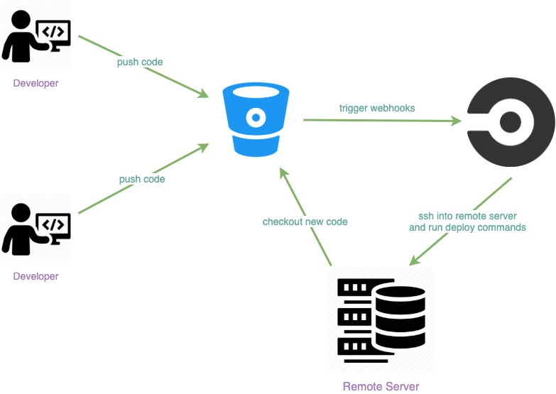

One process. From first question to long-term value.
Different organizations require different solutions, but the principles behind how we solve problems remain consistent.
We start with the problem.
Technology is only useful when it solves something meaningful. Our process begins by understanding the people, processes, data, constraints, and goals behind a problem before deciding what should be built.
Understand the problem
Not the symptoms.
Understand the context
People, systems, constraints.
Define success
Before building.
Select technology
Based on the problem, not trends.
Build around workflows
How teams actually work.
Measure & improve
Continuous learning.
PROBLEM-FIRST PHILOSOPHY
What needs to change?
Who, where, and why?
What do we now understand?
What should we do about it?
What we build.
What changes as a result.
Before we build, we learn.
Discovery helps us understand the real problem, the people affected by it, the processes surrounding it, and the constraints that shape the solution.
What we investigate
Who uses the system?
How does work happen today?
What information exists?
What systems already exist?
What limitations matter?
What should improve?
Depending on the engagement, discovery may produce
- Problem statement and scope
- Requirements map and workflow understanding
- Data landscape and technical considerations
- Defined success criteria
- Initial opportunity areas
Turn understanding into a clear direction.
Once the problem is understood, we determine what should be built, why it matters, how it should work, and what should happen first.
Strategy answers questions like
What should we build?
What should we not build?
What should happen first?
What data is required?
Where can AI add value?
What should it look like as it grows?
Potential strategy activities
- Solution architecture and technology selection
- Data strategy and AI opportunity assessment
- MVP definition and prioritization
- Roadmap development and integration planning
- Security and scalability considerations
FROM PROBLEM TO ROADMAP
Turn the strategy into something people can use.
We design and engineer practical systems around real users, real workflows, and real technical requirements.
Development workflow
Translate strategy into a technical plan.
Interfaces around real users.
Test ideas before investing heavily.
Engineer software, data, AI, infra.
Validate function, use, reliability.
Use evidence to improve.
Engineering principles

Move from working software to a working system.
Deployment is where technology enters the real environment. We prepare the solution, connect the necessary systems, validate the implementation, and help move it into operation.
Deployment pipeline
Depending on the solution, deployment readiness may include
- Core functionality validated
- Key workflows tested
- Data flows reviewed
- Integrations configured
- Access controls considered
- Production environment prepared
- Documentation available
- Monitoring considerations addressed

Launch is not the end.
Technology evolves. Organizations evolve. Our work can continue after deployment through support, iteration, optimization, and scaling.
Continuous improvement
The first version should create a foundation for learning, not become a ceiling.
Potential areas of ongoing work
The principles behind the process.
Regardless of scale or sector, these principles guide how we work.
Purpose
We build with intention.
Clarity
We make complex problems understandable before making them technical.
Collaboration
The strongest solutions are shaped with the people who understand the problem.
Excellence
We pursue quality in the details and discipline in the foundations.
Impact
We care about whether technology makes a meaningful difference.
Built with you, not just for you.
Good technology depends on shared understanding. We work with stakeholders throughout the process so decisions remain visible, assumptions can be challenged, and the resulting system reflects the organization it serves.
This is also why we say the process is flexible. Not every engagement moves through the same stages in the same way. Some projects require deeper discovery. Others may move quickly into prototyping. Larger systems may revisit strategy during development.
Start with the problem. Build toward the outcome.
Whether you have a defined product idea, a difficult operational problem, fragmented data, or an opportunity to use AI, the first step is a conversation.
Start a Project Book a ConsultationTechnology with purpose. Good technology starts with a good understanding of the problem.